전자산업기사 (2015-03-08 기출문제)
1과목: 전자회로
1. pn 접합 다이오드에서 정공과 전자가 서로 반대쪽으로 흘러 나가는 것을 방해하는 것은 접합부에 무엇이 있기 때문인가?
- 전위장벽
- 전자궤도
- 에너지 준위
- 페르미 준위
(정답률: 91%)

2. 다음 증폭기 회로의 교류 부하선의 기울기는?
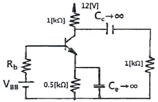
- -1/2000
- -1/1500
- -1/1000
- -1/500
(정답률: 64%)
3. 다음 발진기들 중 귀환 회로를 사용하지 않는 발진기는?
- LC 동조회로를 사용한 터널다이오드 발진기
- 컬렉터 동조 발진기
- CR 이상 발진기
- X-tal 발진기
(정답률: 61%)
4. 다음 중 발진기에서 발진주파수가 변동되는 것을 방지하기 위한 대책으로 적합하지 않은 것은?
- 온도를 일정하게 유지한다.
- 부하의 변동을 크게 한다.
- 정전압 회로를 넣는다.
- 습기가 차지 않게 한다.
(정답률: 81%)
5. 다음 중 그림과 같은 증폭기의 귀환율 β의 값은?
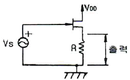
- 0
- 0.5
- 1
- ∞
(정답률: 65%)
6. 소신호 트랜지스터 증폭 회로에서 입력 저항은 매우 작고, 출력 저항이 매우 큰 것은?
- 푸시 풀(Push-pull) 방식
- 베이스 접지방식
- 컬렉터 접지방식
- 이미터 접지방식
(정답률: 67%)
7. 다음 회로에서 연산증폭기일 때 V1=2[V], V2=3[V]일 때 Vo는?
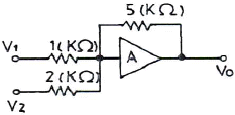
- -17.5[V]
- -1.6[V]
- -11.25[V]
- -7.2[V]
(정답률: 85%)
8. 트랜지스터가 스위치로 사용할 때 쓰이는 두 개의 영역은?
- 포화영역과 활성영역
- 활성영역과 차단영역
- 포화영역과 차단영역
- 활성영역과 역활성영역
(정답률: 78%)
9. 다음 연산증폭기 회로에서 Vi - Vo의 관계 특성으로 가장 적합한 것은? (단, 연산증폭기 및 다이오드는 이상적이다.)
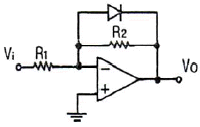
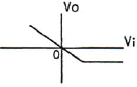
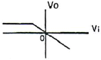
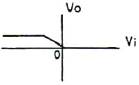
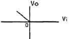
(정답률: 83%)
10. 반송파 전력이 10[kW]일 때 변조파형이 그림과 같을 경우에 피변조파의 전력 Pm은 얼마인가?
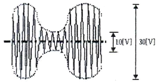
- 1.125[kW]
- 3.375[kW]
- 11.25[kW]
- 33.75[kW]
(정답률: 72%)
11. 연산증폭기의 입력전류가 각각 9.7[μA]와 7.5[μA]일 때 바이어스 전류(Ibias)는 얼마인가?
- 7.6[μA]
- 8.1[μA]
- 8.6[μA]
- 9.1[μA]
(정답률: 77%)
12. 다음 중 공통 에미터 접속에 대한 h상수 표현식으로 틀린 것은?
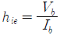
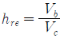
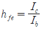
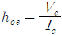
(정답률: 62%)
13. 연산 증폭기의 특성으로 틀린 것은?
- 반전, 비반전 2개의 입력단자를 가지며, 각각의 입력단자에 가해진 입력 전압의 차 전압이 증폭되는 차동증폭기를 입력단으로 사용한다.
- 귀환에 대한 안정도를 높이기 위해 광범위한 주파수에서 주파수 보상 회로를 필요로 한다.
- 연산의 정확도를 높이기 위해서는 큰 증폭도와 좋은 안정도를 필요로 한다.
- 대역폭이 무한대이고, 지연응답이 0이다.
(정답률: 68%)
14. PLL을 구성하는 회로 블록이 아닌 것은?
- 위상 검출기
- 저역 통과 필터
- 주파수 체배기
- 전압 제어 발진기
(정답률: 72%)
15. 다음 중 발진회로의 특징이 아닌 것은?
- 콜피츠 발진의 귀환신호는 LC회로의 커패시터 전압에서 유도된다.
- 정현파 RC 발진기에는 윈 브리지형, 이상형 등이 있다.
- 귀환 루프의 전압이득이 1이어야 한다.
- 정귀환 조건 중 귀환 루프의 위상차는 90°이다.
(정답률: 54%)
16. 변압기를 사용하지 않는 전력 증폭회로에서 push-pull 회로의 조건으로 거리가 먼 것은?
- 두 입력의 크기는 같을 것
- 위상차는 180°일 것
- B급에서 동작할 것
- 전원 효율이 50% 이하일 것
(정답률: 81%)
17. 그림과 같이 동일 진폭의 두 정현파 10[kHz], 1[kHz]가 다이오드에 인가될 때 출력측에 나타나는 전압 성분 중 가장 많은 것은?
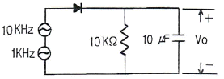
- DC 성분
- 1[kHz] 성분
- 10[kHz] 성분
- 11[kHz] 성분
(정답률: 79%)
18. 그림과 같은 정류회로에서 다이오드 D1에 걸리는 최대 역전압(PIV)은? (단, 다이오드의 순방향 저항은 무시하고, C1, C2 및 RL은 충분히 크다고 생각한다. 그리고 전원 변성기 2차측에는Vmsinωt[V]를 인가한 것으로 한다.)
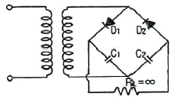
- Vm
- 2Vm
- √2 Vm
- 2√2 Vm
(정답률: 65%)
19. 그림과 같은 회로에서 출력 전압은? (단, R1 = R2이고, R3 = R4이다.)
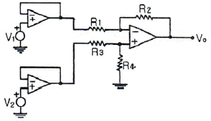
- V1 - V2
- V2 - V1
- V1 - 2V2
- 2V2 - V1
(정답률: 85%)
20. 그림과 같은 연산회로의 전달특성은?
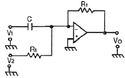
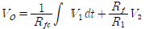
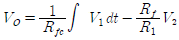
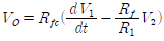
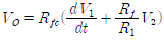
(정답률: 70%)
2과목: 전기자기학 및 회로이론
21. 도선의 길이 ℓ(m), 단면적을 A(m2), 양단간의 저항을 R(Ω)이라하면 단위 길이당의 저항을 무엇이라 하는가?
- 비저항
- 전기전도도
- 도전율
- 컨덕턴스
(정답률: 66%)
22. 전자계에 대한 맥스웰의 기본 이론이 아닌 것은?
- 전하에서 전속선이 발산된다.
- 자극은 N, S극이 항상 공존한다.
- 자계의 시간적 변화에 따라 전계의 회전이 생긴다.
- 전도전류는 자계를 발생시키나, 변위전류는 자계를 발생시키지 않는다.
(정답률: 67%)
23. 무한 솔레노이드에 전류가 흐를 때, 다음 설명 중 옳은 것은?
- 내부자장은 위치에 상관없이 일정하다.
- 내부자장과 외부자장은 그 값이 같다.
- 내부자장의 크기는 0이다.
- 솔레노이드 내부의 자계와 같은 자계가 외부에 존재한다.
(정답률: 55%)
24. 2μF, 3μF, 4μF의 콘덴서를 직렬로 연결하고 양단에 가한 전압을 서서히 상승시킬 때 다음 중 옳은 것은? (단, 유전체의 재질 및 두께는 같다고 한다.)
- 2μF의 콘덴서가 제일 먼저 파괴된다.
- 3μF의 콘덴서가 제일 먼저 파괴된다.
- 4μF의 콘덴서가 제일 먼저 파괴된다.
- 3개의 콘덴서가 동시에 파괴된다.
(정답률: 82%)
25. 그림과 같이 공극의 면적이 100[cm2]인 전자석의 자속밀도가 0.5[Wb/m2]인 철편을 흡인하는 힘은 약 몇 [N]인가?
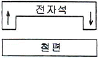
- 2250/π
- 4250/π
- 6250/π
- 8250/π
(정답률: 66%)
26. 유전속의 분포가 그림과 같을 때 ε1과 ε2의 관계는?
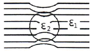
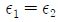
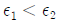
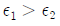
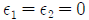
(정답률: 74%)
27. 전하량이 같은 두 점전하가 진공 중에 서로 1[m], 떨어져 놓여있다. 이 전하 사이에 작용하는 힘이 1[dyne]일 때 점 전하의 전하량은 몇 C인가? (단, 1[dyne] = 10-5[N]이다.)
- 1.11×10-4
- 2.22×10-5
- 3.33×10-8
- 4.44×10-9
(정답률: 49%)
28. 코일을 지나는 자속의 cos ωt 에 따라 변화할 때 코일에 유도되는 유도 기전력의 최대값은 주파수와 어떤 관계가 있는가?
- 주파수에 반비례
- 주파수에 비례
- 주파수 제곱에 반비례
- 주파수 제곱에 비례
(정답률: 54%)
29. 두 개의 도체에서 전위 및 전하가 각각V1, Q1 및 V2, Q2 일 때, 이 도체계가 갖는 에너지는 얼마인가?
- 1/2 (V1Q1+V2Q2)
- 1/2 (Q1+Q2)(V1+V2)
- V1Q1+V2Q2
- (V1+V2)(Q1+Q2)
(정답률: 57%)
30. ø=ømsinωt(Wb)인 정형파 자속이 코일을 쇄교할 때, 유기 기전력의 위상은 자속에 비해 어떠한가?
- π/2 만큼 빠르다.
- π/2 만큼 느리다.
- π 만큼 빠르다.
- 동위상이다.
(정답률: 60%)
31. 콘덴서와 코일에서 실제적으로 급격히 변할 수 없는 것은?
- 코일에서 전압, 콘덴서에서 전류
- 코일에서 전류, 콘덴서에서 전압
- 코일 콘덴서 모두 전압
- 코일 콘덴서 모두 전류
(정답률: 72%)
32. 시정수 τ인 RC 직렬회로에 t=0에서 직류 전압을 인가하였을 때 t=5τ에서 회로의 전압은 정상치의 몇 [%]가 되는가? (단, 초기치는 0으로 한다.)
- 63
- 86
- 95
- 99
(정답률: 59%)
33. 회로망의 개방전압을 E, 합성 임피던스를 ZO, 부하저항을 RL이라면 부하에 흐르는 전류 I 는?
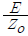
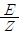
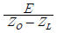
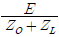
(정답률: 61%)
34. 저항 R, 리액턴스 X의 직렬회로에서 X/R = 1/√2 일때 회로의 역률은?
- 12
- 1/√3
- √2/√3
- √3/2
(정답률: 66%)
35. 저항 3[Ω]과 리액턴스 4[Ω]을 병렬로 연결한 회로에서의 역률은?
- 4/5
- 3/5
- 3/7
- 3/4
(정답률: 58%)
36. F(S)=1의 역 Laplace 변환 f(t)는?
- δ(t)
- u(t)
- t
- 1
(정답률: 78%)
37. 4단자 정수에 대한 설명으로 틀린 것은?
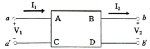
- A는 개방 역방향 전압 이득을 나타낸다.
- B는 단락 순방향 전달 임피던스를 나타낸다.
- C는 개방 순방향 임피던스를 나타낸다.
- D는 단락 역방향 전류 이득을 나타낸다.
(정답률: 71%)
38. 어떤 회로의 전압
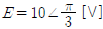
, 전류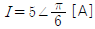
일 때 임피던스 Z[Ω]는?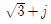
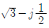
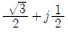
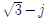
(정답률: 54%)
39. 결합계수가 0.5라면 이들을 접속시켜 얻을 수 있는 합성인덕턴스의 최대치와 최소치의 차는? (단, 두 가지 인덕턴스는 L1=L2=20[mH]이다.)
- 20[mH]
- 30[mH]
- 40[mH]
- 50[mH]
(정답률: 56%)
40. 회로에서 R이 클수록 회로의 Q는 어떻게 되는가?
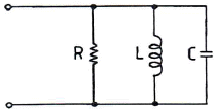
- 적어진다.
- 커진다.
- 변함없다.
- R에 무관하다.
(정답률: 66%)
3과목: 전자계산기일반
41. 다음에서 제어장치가 하는 것은?
- 논리 연산
- 명령어 해독
- 번지 부여
- 피가수 기억
(정답률: 63%)
42. 자료가 기억된 장소에 직접 매핑(Mapping) 시킬 수 있는 주소 방식은?
- 간접 주소
- 직접 주소
- 상대 주소
- 계산에 의한 주소
(정답률: 71%)
43. 다음의 코드체계 중 인접한 연속된 수들을 서로 한 비트만 달라지게 나타내는 이진 코드의 표현방법으로 주로 오류정정에 사용되는 코드는?
- BCD
- ASCII
- GRAY
- UNI
(정답률: 75%)
44. 시스템프로그래밍 언어로서 C언어가 적합한 이유가 아닌 것은?
- 비트조작이 가능
- 포인터 사용이 가능
- 분할 컴파일 가능
- 객체지향 프로그래밍 가능
(정답률: 66%)
45. 다음 진리표를 보고 출력 논리를 구성할 때 도출될 수 있는 논리식은?
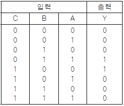
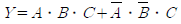
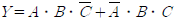
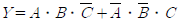
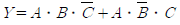
(정답률: 75%)
46. 컴퓨터시스템의 중앙처리장치(CPU)를 구성하는 요소가 아닌 것은?
- 제어장치
- 산술연산장치
- 레지스터
- 메모리
(정답률: 72%)
47. 소스 프로그램을 한 줄씩 읽어서 번역하고 실행하는 것은?
- 기계어
- 어셈블러
- 컴파일러
- 인터프리터
(정답률: 65%)
48. 컴퓨터 설계 단계에서부터 이미 할당되어 있는 주소는?
- base address
- absolute address
- direct address
- indirect address
(정답률: 75%)
49. 하향식(Top-down) 프로그램의 설계 방식 특징이 아닌 것은?
- 프로그램의 설계를 향상시킨다.
- 프로그램의 복잡도를 감소시킨다.
- 프로그램의 효율성을 증가시킨다.
- 프로그램을 상세 모듈부터 설계하여 연동한다.
(정답률: 75%)
50. 4비트의 2진수를 그레이 코드로 변경하는 논리회로를 구현하기 위한 게이트로 알맞은 것은?
- AND 게이트 3개
- OR 게이트 3개
- NAND 게이트 3개
- XOR 게이트 3개
(정답률: 79%)
51. 마이크로프로세서의 중앙처리장치 명령어 중에서 스택의 정의가 틀린 것은?
- LIFO(Last-In-First-Out)의 특징을 가진다.
- 스택의 TOP으로부터 한 요소를 꺼내는 동작을 POP이라고 한다.
- 스택은 보조기억장치의 일부분을 블록으로 지정해서 사용한다.
- 스택의 TOP에 새로운 요소를 추가하는 동작을 PUSH라고 한다.
(정답률: 56%)
52. 어셈블리어에 대한 설명으로 옳지 않은 것은?
- 기계어에 비해 프로그램 작성이나 수정이 어렵다.
- 기종 간 호환성이 없으므로 전문가 외에는 사용하기 어렵다.
- 컴퓨터 동작 원리에 대한 전문 지식이 필요하다.
- 기계어보다 사용하기 편리하다.
(정답률: 70%)
53. 시스템 소프트웨어에 관한 설명으로 옳은 것은?
- 언어 프로세서는 기계 언어를 사용자 편의로 된 언어로 번역한다.
- 로더 프로그램은 주기억장치의 내용을 보조기억장치로 보낸다.
- 진단 프로그램은 컴퓨터의 고장을 고쳐준다.
- 라이브러리 프로그램은 응용 프로그래머에게 표준 루틴을 제공한다.
(정답률: 61%)
54. 버스를 통하여 데이터를 전송할 때 노이즈와 같은 외부 요인에 의해 발생하는 영향을 극소화하기 위하여 만든 장치를 무엇이라고 하는가?
- 카운터
- PC
- 버퍼
- SP
(정답률: 78%)
55. 포인터(pointer)에 의하여 연결된 리스트를 무엇이라 하는가?
- Sequence list
- Dense list
- Linked list
- Linear list
(정답률: 78%)
56. 4개의 2진 변수로 수행할 수 있는 논리 연산은 몇 가지인가?
- 8
- 16
- 32
- 64
(정답률: 80%)
57. 10진수를 2진수로 변환하는 변환기는?
- Encoder
- Decoder
- Multiplexer
- Demultiplexer
(정답률: 68%)
58. 인쇄물이나 이미지에 빛을 투시해 반사되는 광선의 양적 차이인 강약을 검출하여 문자를 인식, 판독하는 장치는?
- MRI
- OMR
- OCR
- MICRE
(정답률: 77%)
59. 기억기능은 없이 특정 기능을 수행할 수 있도록 게이트를 조합한 논리 회로는?
- 순서 논리 회로
- 조합 논리 회로
- 메모리 논리 회로
- 단순 논리 회로
(정답률: 73%)
60. 병원이나 학교, 기업체 등의 구내에서 컴퓨터와 각종 사무기기를 연결하여 업무에 효율적으로 사용하기 위한 정보 통신망을 무엇이라 하는가?
- VAN
- LAN
- ISDN
- WAN
(정답률: 80%)
4과목: 전자계측
61. 디지털 주파수계를 설명한 것으로 틀린 것은?
- 입력 전압을 증폭하여 파형을 펄스형으로 바꾼다.
- 10진 계수회로가 필요하다.
- 정확한 시간 기준으로서 수정 발진기가 필요하다.
- 입력 피측정파를 분석하기 위하여 진폭레벨에 의한 A/D 컨버터가 필요하다.
(정답률: 63%)
62. 단상 교류전력을 측정하기 위한 방법이 아닌 것은?
- 3상 전류계법
- 3상 전력계법
- 3상 전압계법
- 단상전력계법
(정답률: 69%)
63. 다음 그림과 같은 원리도를 가지는 주파수계는?
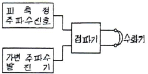
- 딥메터
- 공동 주파수계
- 흡수형 주파수계
- 헤테로다인 주파수계
(정답률: 71%)
64. 표준신호발생기(SSG)가 갖추어야 할 조건으로 옳지 않은 것은?
- 출력 임피던스가 클 것
- 불필요한 출력을 내지 않을 것
- 변조도가 자유롭게 조절될 수 있을 것
- 주파수가 정확하고 가변범위가 넓을 것
(정답률: 71%)
65. 전류력계형 계기의 특징으로 옳지 않은 것은?
- 계기의 지시값은 실효값이다.
- 외부 자계의 영향을 거의 받지 않는다.
- 직류, 교류 어느 것이든 같은 지시를 한다.
- 계기의 소비 전력이 크고, 구조가 다소 복잡하다.
(정답률: 54%)
66. 헤테로다인 주파수계에 단일 비트(single beat)법 보다 2중 비트(double beat)법이 좋은 이유는?
- 구조가 간단하다.
- 취급이 용이하다.
- 고정용 발진기를 사용하므로
- 제로 비트 식별이 용이하므로
(정답률: 77%)
67. 다음 중 Q meter로 측정할 수 없는 것은?
- 공진 주파수
- 콘덴서의 정전용량
- Coil의 분포용량
- Coil의 실효저항
(정답률: 58%)
68. 안테나의 실효저항측정법에 해당하지 않은 것은?
- 치환법
- 작도법
- 코일삽입법
- 저항삽입법
(정답률: 61%)
69. 오차의 백분율이 +12[%]일 때 보정 백분율은?
- -12[%]
- +12[%]
- +10.7[%]
- -10.7[%]
(정답률: 59%)
70. 전압계의 배율기 저항은? (단, 배율은 M, 전압계 내부 저항은Rv 이다.)
- (M-1)Rv
- Rv(M+1)
- Rv/(M-1)
- Rv/(M+1)
(정답률: 58%)
71. 저저항을 측정하는 방법의 종류가 아닌 것은?
- 전압강하법
- 전위차계법
- 전압계법
- 캘빈더블 브리지법
(정답률: 50%)
72. 표준신호발생기(SSG)에서 부하의 변동에 따른 주파수의 변화를 방지하기 위해서 사용하는 증폭기는?
- 고주파 증폭기
- 출력감쇠 및 증폭기
- 완충 증폭기
- 저주파 증폭기
(정답률: 64%)
73. 표준저항기의 구비조건에 해당되지 않는 것은?
- 온도계수가 적을 것
- 저항 값이 안정할 것
- 저항치가 변화하지 않을 것
- 구리에 대한 열기전력이 클 것
(정답률: 72%)
74. 캠벨 브리지는 무엇을 측정하는데 사용되는가?
- 커패시턴스
- 저항
- 상호 인덕턴스
- 컨덕턴스
(정답률: 72%)
75. 주파수의 영향을 받지 않는 계기는?
- 유도형
- 열전대형
- 가동철편형
- 전류력계형
(정답률: 68%)
76. 디지털 주파수계에서 카운터 부분의 회로는 어떤 회로로 구성되어 있는가?
- 리미터 회로
- 클램핑 회로
- 플립플롭 회로
- 모노멀티 회로
(정답률: 77%)
77. 브라운관 오실로스코프의 다음 그림은 무엇을 측정한 것인가?
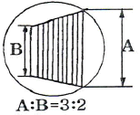
- 20%의 AM 변조도
- 20%의 FM 변조도
- 40%의 AM 변조도
- 40%의 FM 변조도
(정답률: 74%)
78. 브리지 회로로 측정할 수 없는 것은?
- 저항
- 인덕턴스
- 커패시턴스
- 고조파 주파수
(정답률: 76%)
79. 셰링브리지(Schering Bridge)로 측정할 수 있는 것은?
- 동손
- 정전용량과 손실각
- 철심의 관전류
- 유도 리액턴스
(정답률: 73%)
80. 자속밀도 0.5[Wb/m2]의 평등자게 내에 유효 면적이 5×10-4[m2], 권수 50회인 코일에 1[mA]의 전류를 흘릴 때 가동코일형 계기의 구동 토크는?
- 12500×10-9[Nㆍm]
- 1250×10-6[Nㆍm]
- 125×10-9[Nㆍm]
- 125×10-8[Nㆍm]
(정답률: 54%)